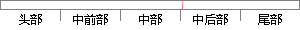

可以到http://www.
片段位置图

相似结果
相似片段：供应商代码和设备代码,读者可以到网站http://www.pcidatabase.corn/查阅。 (3)版本号修改识别字段(RevisionID) 该字段用来指定一个设备特有的修改识别代码,其值由...
| 标题 | 《基于PCI的硬盘保护技术的应用研究》 |
| 对比库 | 中国学位论文全文数据库 |
| 作者 | 孙大勇 |
| 机构 | 合肥工业大学 |
| 分类 | 计算机技术 |
| 年份 | 2009 |
| 相似率 | 100% （严重抄袭） |